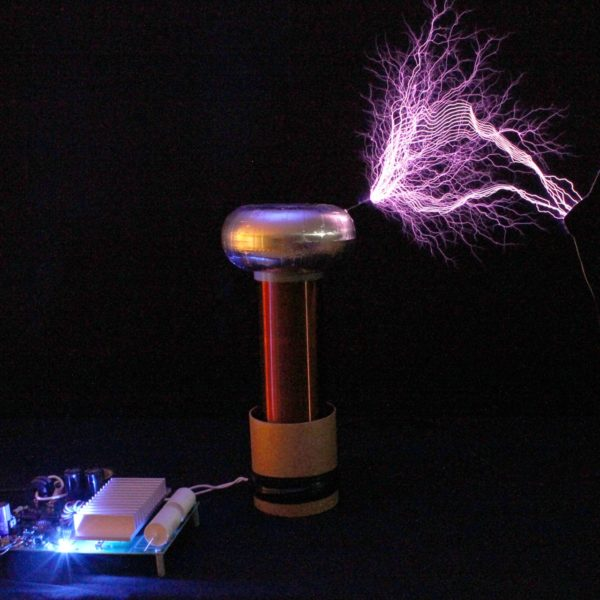

Há varias maneiras de ouvir a mesma música, existem as gravações em estudio, gravações de DVD, Shows, Covers, Versões Ritmicas, etc.
Sempre gostei muito de música e de como a música, é volatil, e como qualquer coisa pode virar música, hoje disquetes e hd's antigos podem tocar nirvana, uma bobina de tesla pode tocar final countdown, e dá pra fazer todo o instrumental de Yummi do Justin Bieber com comida, assim como as Cup Songs, musica na calculadora, na maquina de lavar, usando fidget spinner, memes, vale tudo.
Eu fiquei um mês buscando e ouvindo varias versões da música original, para fazer essa versão para conjunto de cordas, e entre Covers, versões acusticas e minha mãe irritada por ter que ficar todo esse tempo ouvindo a mesma música todo dia, esse é o resultado final.
Esse video pra mim é muito bom porque mostra o quanto podemos ser mais criativos do que imaginamos, inclusive eu tenho o Kurt como uma referência de como a música pode estar em qualquer lugar.